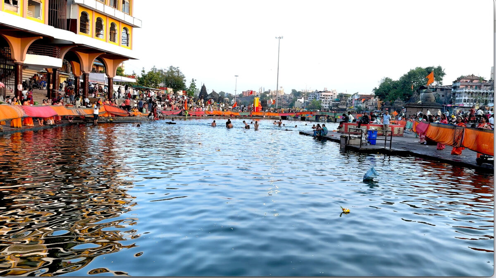
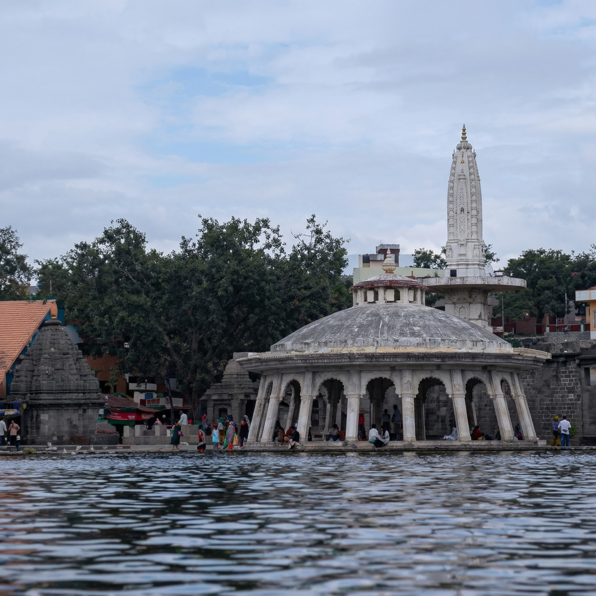
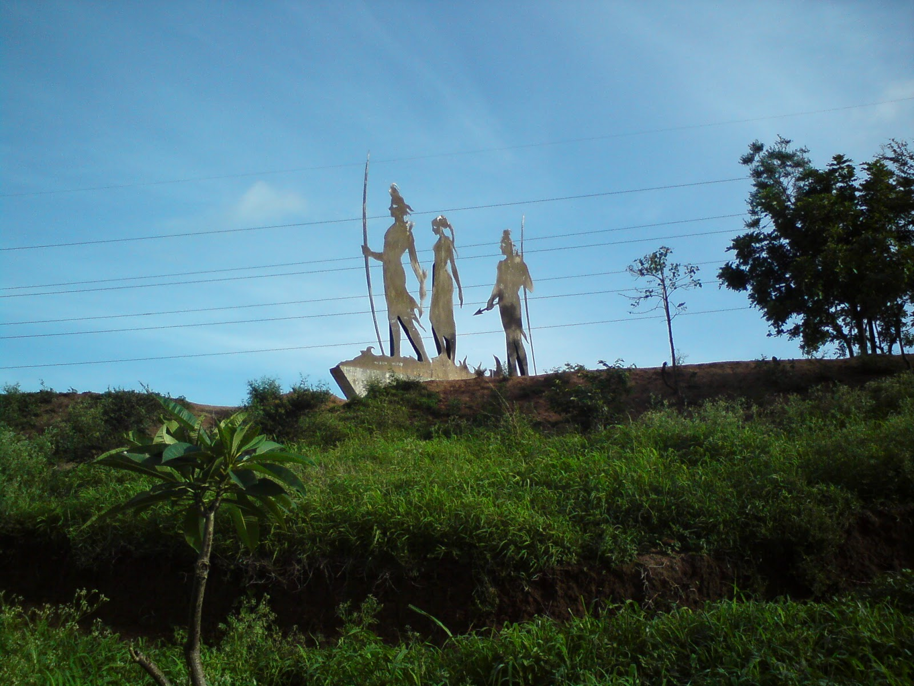
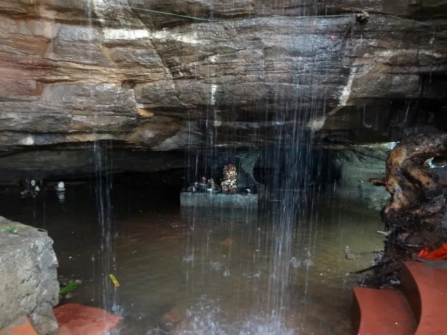
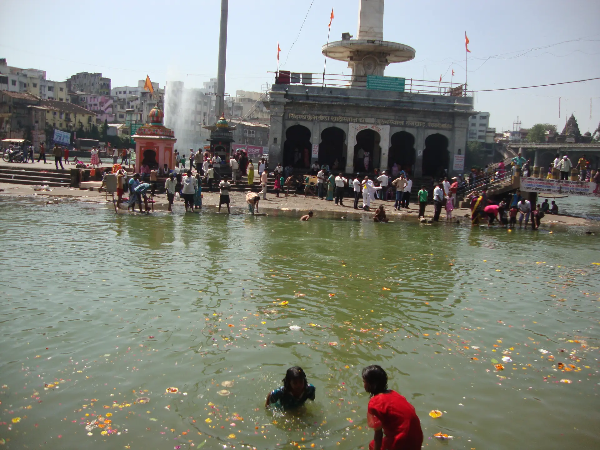
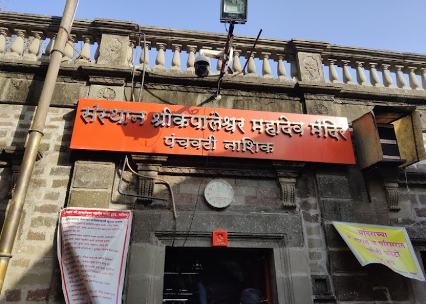

The holy bathing ghats on the Godavari — interactive map with real locations
Click any ghat card to locate it on the interactive map below

Ghat 1 Primary SnanThe most sacred ghat where Lord Rama bathed during exile. Primary site for all Shahi Snan processions. Water here is believed to never decompose.

Ghat 2Adjacent to Ram Kund, dedicated to Lord Lakshmana. Known for pristine clarity year-round. A peaceful spot for pilgrims after the main Ram Kund bath.

Ghat 3 Meditation ZoneSerene forest-hermitage where sages Agastya and Valmiki meditated. Preferred by sadhus and yoga practitioners. Calm and away from main crowds.

Ghat 4 Women PilgrimsDedicated to Goddess Sita, where she performed her daily rituals. Specially venerated by women pilgrims, with the Sita Temple overlooking the Godavari.

Ghat 5 Maratha HeritageBuilt by Maratha Queen Ahilyabai Holkar in the 18th century. Beautiful architecture hosts major Akhara processions during Shahi Snan ceremonies.

Ghat 6 Shiva DevoteesNamed after sage Kapila, this ghat houses the ancient Kapaleshwar Mahadev temple. Major site for Shaiva devotees and Mahashivratri celebrations during Kumbh.
Click any marker on the map to see ghat details • Click a card above to focus on the map